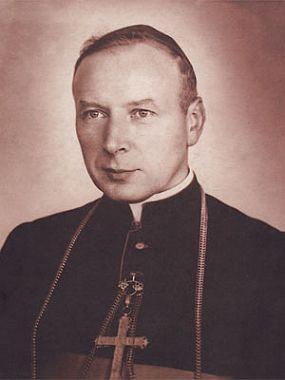

Biskupstwo
Po zakoñczeniu wojny wróci³ do W³oc³awka, gdzie reorganizowa³ seminarium duchowne i pe³ni³ obowi±zki rektora. W 1946 zosta³ mianowany biskupem diecezjalnym lubelskim. ¦wiêcenia biskupie otrzyma³ z r±k kardyna³a Augusta Hlonda, prymasa Polski.
 W swoim herbie biskupim umie¶ci³ s³owa "Soli Deo" tzn. "Jedynemu Bogu". S³u¿ba Bogu samemu przez Maryjê by³a widoczna w jego ca³ym ¿yciu. Zapiski wiêzienne zawieraj± pewn± syntezê jego maryjno¶ci, której pocz±tki siêgaj± czasu dzieciñstwa i m³odo¶ci: "Wcze¶nie - napisa³ - straci³em matkê rodzon±, która mia³a szczególne nabo¿eñstwo do Matki Ostrobramskiej, dok±d je¼dzi³a z pielgrzymk±, jeszcze z Zuzeli. Mój ojciec natomiast ci±gn±³ zawsze na Jasn± Górê. Cze¶æ Matki Bo¿ej w ¿yciu domowym by³a bardzo rozwiniêta. Czêsto odmawiali¶my wspólnie ró¿aniec w godzinach wieczornych".